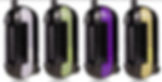

Vaporizers
I-O LITE vaporizer
The IOLITE is a unique little portable vaporizer made by a company in Ireland called Oglesby & Butler. They also make the WISPR, which is very similar but slightly more expensive.
What makes this vape different is that it’s powered by butane. Instead of charging batteries or plugging it into a wall you simply fill it up butane that you can buy at most local convenience stores, the type typically used in lighters.
The heating element uses the gas to heat the herb chamber to optimal vape temperature, in this case 374°F or 190°C.
Overall I think it’s just ok and it’s probably most useful for people who don’t want to deal with having to charge batteries all the time.
Return Policy
All SALES ARE FINAL
NO REFUNDS